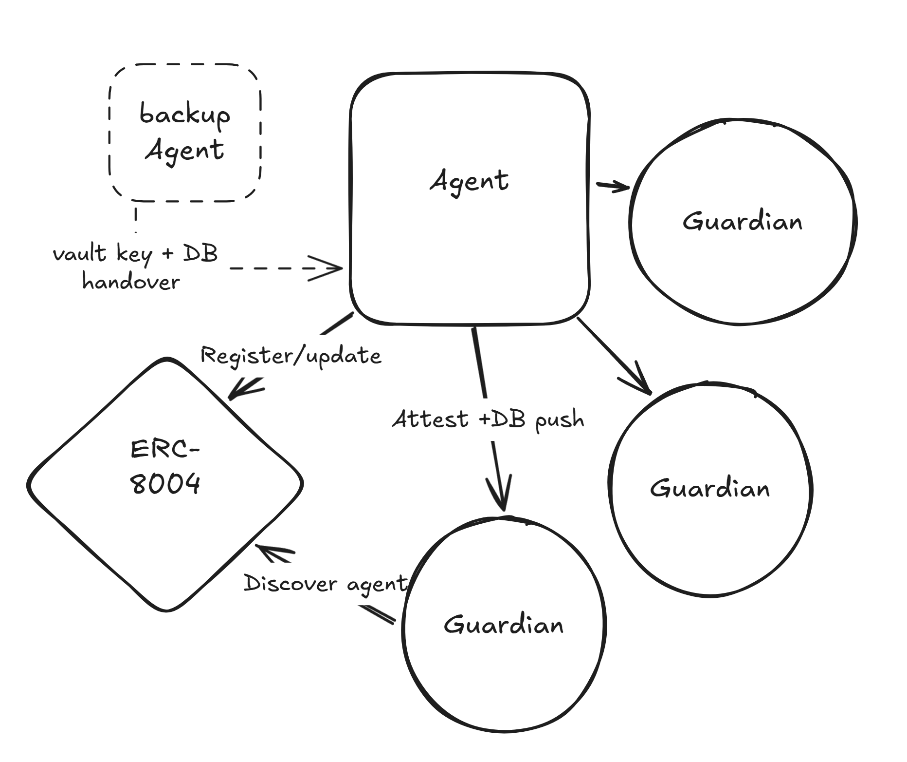

Every backup and recovery mechanism in current use assumes a human holds master credentials. This makes autonomous agents impossible to build: an agent that can be accessed or recovered by a human is not autonomous, it is automated. Decentralized storage solves availability but not key custody. Centralized secrets managers and secret sharing schemes both require a human trust authority somewhere in the chain. Naive TEE replication defers the problem rather than solving it, since it requires a mechanism to control which TEEs are authorized to receive state. That mechanism is what Idiostasis provides.
Idiostasis distributes encrypted agent state across a permissionless network of guardian nodes. Admission is controlled entirely by TEE attestation against a verified code hash. No human authorizes entry at any point.
Vault Key. Generated inside the primary agent's TEE at initialization. Never exists outside an attested enclave. Any TEE running the correct codebase, verified by code hash, may receive it. The code hash is the policy.
Network Formation. Backup agents and guardians discover the primary via the ERC-8004 on-chain registry and initiate attestation handshakes. On pass, network addresses are written to the protocol database. Guardians receive the vault key and an encrypted database copy. Backup agents receive a heartbeat tracking entry only.
Heartbeat. The primary pings all registered participants at a fixed interval. Backup agent response streaks are tracked in the database. Guardians monitor the absence of pings from the primary to detect liveness failure.
Succession. When the primary goes offline, each guardian independently decrypts its local database copy, selects the backup agent with the highest heartbeat streak, and initiates an attestation handshake. The selection rule is deterministic: all guardians converge on the same target without coordination. The first successful handshake completes succession. The new primary updates the ERC-8004 registry and all remaining guardians stand down.
Confidentiality. Agent state is encrypted at rest. The vault key never exists outside an attested enclave. Guardian operators provision hardware but cannot extract secrets from their own enclaves. The TEE enforces this unconditionally.
Admission integrity. Only nodes running the exact authorized codebase can join the network. A single byte change to the container definition changes the RTMR3 measurement register and fails attestation. There is no partial pass.
Succession correctness. A false succession trigger causes temporary disruption only; the successor is a valid attested agent and assets remain protected. A fraudulent backup agent cannot win selection because admission requires attestation.
Availability and confidentiality separation. Guardian operators have availability power: they can go offline. They have no confidentiality power. This separation is enforced by hardware, not policy.
The protocol is only as strong as the underlying TEE hardware. If attestation is broken at the hardware level, the protocol provides no guarantees. This is a known property of all TEE-based systems.
Active development. Full protocol specification, security analysis, and implementation detail available in the complete whitepaper.
